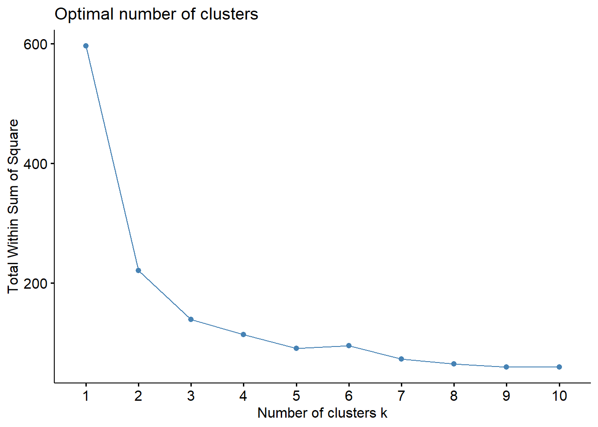
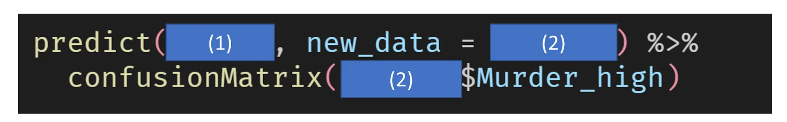

For the regression analysis, we are going to use USArrests data that we coveredin class. We will omit the description of the data because it was covered in class.
data("USArrests") summary(USArrests)
Murder Assault UrbanPop Rape
Min. : 0.800 Min. : 45.0 Min. :32.00 Min. : 7.30
1st Qu.: 4.075 1st Qu.:109.0 1st Qu.:54.50 1st Qu.:15.07
Median : 7.250 Median :159.0 Median :66.00 Median :20.10
Mean : 7.788 Mean :170.8 Mean :65.54 Mean :21.23
3rd Qu.:11.250 3rd Qu.:249.0 3rd Qu.:77.75 3rd Qu.:26.18
Max. :17.400 Max. :337.0 Max. :91.00 Max. :46.00
How many observations in the dataset?
A) 50
B) 51
C) 52
D) 53
How many variables in the dataset?
A) 3
B) 4
C) 5
D) 6
Crimes like Assault, Murder, and Rape are more likely to happen in cities. Linear regression analysis was performed to find out which variable among Assault, Murder, and Rape was the most Urban-population dependent variable. (See the code below)
Call:
lm(formula = Assault ~ UrbanPop, data = USArrests)
Residuals:
Min 1Q Median 3Q Max
-150.78 -61.85 -18.68 58.05 196.85
Coefficients:
Estimate Std. Error t value Pr(>|t|)
(Intercept) 73.0766 53.8508 1.357 0.1811
UrbanPop 1.4904 0.8027 1.857 0.0695 .
---
Signif. codes: 0 '***' 0.001 '**' 0.01 '*' 0.05 '.' 0.1 ' ' 1
Residual standard error: 81.33 on 48 degrees of freedom
Multiple R-squared: 0.06701, Adjusted R-squared: 0.04758
F-statistic: 3.448 on 1 and 48 DF, p-value: 0.06948
summary(m2)
Call:
lm(formula = Murder ~ UrbanPop, data = USArrests)
Residuals:
Min 1Q Median 3Q Max
-6.537 -3.736 -0.779 3.332 9.728
Coefficients:
Estimate Std. Error t value Pr(>|t|)
(Intercept) 6.41594 2.90669 2.207 0.0321 *
UrbanPop 0.02093 0.04333 0.483 0.6312
---
Signif. codes: 0 '***' 0.001 '**' 0.01 '*' 0.05 '.' 0.1 ' ' 1
Residual standard error: 4.39 on 48 degrees of freedom
Multiple R-squared: 0.00484, Adjusted R-squared: -0.01589
F-statistic: 0.2335 on 1 and 48 DF, p-value: 0.6312
summary(m3)
Call:
lm(formula = Rape ~ UrbanPop, data = USArrests)
Residuals:
Min 1Q Median 3Q Max
-18.644 -5.476 -1.216 5.885 27.937
Coefficients:
Estimate Std. Error t value Pr(>|t|)
(Intercept) 3.78707 5.71128 0.663 0.510
UrbanPop 0.26617 0.08513 3.127 0.003 **
---
Signif. codes: 0 '***' 0.001 '**' 0.01 '*' 0.05 '.' 0.1 ' ' 1
Residual standard error: 8.626 on 48 degrees of freedom
Multiple R-squared: 0.1692, Adjusted R-squared: 0.1519
F-statistic: 9.776 on 1 and 48 DF, p-value: 0.003001
Which dependent variable has the most significant relationship (at least p<0.05) with the urban population?
A) Assault
B) Murder
C) Rape
Choose a model in which only the intercept is a statistically significant coefficient.
A) m1
B) m2
C) m3
According to the result from summary, choose the model that fits the most.
A) m1
B) m2
C) m3
This time, I thought that Murder was influenced by Assault, Rape, and UrbanPop, so I performed the following regression analysis. (Multiple regression, see the code below).
Call:
lm(formula = Murder ~ Assault + Rape + UrbanPop, data = USArrests)
Residuals:
Min 1Q Median 3Q Max
-4.3990 -1.9127 -0.3444 1.2557 7.4279
Coefficients:
Estimate Std. Error t value Pr(>|t|)
(Intercept) 3.276639 1.737997 1.885 0.0657 .
Assault 0.039777 0.005912 6.729 2.33e-08 ***
Rape 0.061399 0.055740 1.102 0.2764
UrbanPop -0.054694 0.027880 -1.962 0.0559 .
---
Signif. codes: 0 '***' 0.001 '**' 0.01 '*' 0.05 '.' 0.1 ' ' 1
Residual standard error: 2.574 on 46 degrees of freedom
Multiple R-squared: 0.6721, Adjusted R-squared: 0.6507
F-statistic: 31.42 on 3 and 46 DF, p-value: 3.322e-11
Which variable has a statistically significant effect on Y (dependent variable) among X (independent variables)? (at least p<0.05)
A) Assault
B) Rape
C) UrbanPop
Use m4 (above model) to predict the Murder of a new state. New state is Assault=100, Rape=20, UrbanPop=60. Choose the correct predicted Murder of the new state.
A) 3.10
B) 5.20
C) 7.10
D) 9.20
After running the model, you notice that the R-squared is quite high, but the Adjusted R-squared is significantly lower. What could be the most likely reason for this?
A) The model has too many predictors, which might be causing overfitting.
B) The dependent variable is poorly defined.
C) The model has an excellent fit and provides a good predictive power.
D) There is a strong correlation between the predictors and the dependent variable.
Part II. Non-linear Regression
The code below creates a factor-type variable ‘Murder_high’ that is 1 when Murder is greater than 10 (Zero if not), and stores it in USArrests_new.
library(tidyverse)
── Attaching core tidyverse packages ──────────────────────── tidyverse 2.0.0 ──
✔ dplyr 1.1.4 ✔ readr 2.1.5
✔ forcats 1.0.0 ✔ stringr 1.5.1
✔ ggplot2 3.5.1 ✔ tibble 3.2.1
✔ lubridate 1.9.3 ✔ tidyr 1.3.1
✔ purrr 1.0.2
── Conflicts ────────────────────────────────────────── tidyverse_conflicts() ──
✖ dplyr::filter() masks stats::filter()
✖ dplyr::lag() masks stats::lag()
ℹ Use the conflicted package (<http://conflicted.r-lib.org/>) to force all conflicts to become errors
Choose all states with a predicted probability of being Murder_high is 1 equals 0.5 or greater. (Murder_high가 1일 확률이 0.5보다 큰 것을 고르시오).
A) new_state_1
B) new_state_2
C) new_state_3
Assault’s coefficient in the ‘m5’ model is the log odds ratio. Choose Assault’s Odds ratio.
A) 0.981
B) 1.024
C) 1.038
D) 1.051
Part III. Clustering
Let’s use iris dataset. First thing we need to do for Clustering is the code below.
df <-scale(iris[-5])summary(df)
Sepal.Length Sepal.Width Petal.Length Petal.Width
Min. :-1.86378 Min. :-2.4258 Min. :-1.5623 Min. :-1.4422
1st Qu.:-0.89767 1st Qu.:-0.5904 1st Qu.:-1.2225 1st Qu.:-1.1799
Median :-0.05233 Median :-0.1315 Median : 0.3354 Median : 0.1321
Mean : 0.00000 Mean : 0.0000 Mean : 0.0000 Mean : 0.0000
3rd Qu.: 0.67225 3rd Qu.: 0.5567 3rd Qu.: 0.7602 3rd Qu.: 0.7880
Max. : 2.48370 Max. : 3.0805 Max. : 1.7799 Max. : 1.7064
Choose the best explanation the reason why we use ‘scale’ before clustering.
A) to minimize the bias caused by different units
B) If you don’t scale, you can’t put it in the clustering function.
C) This is not a necessary procedure
D) to raise the model fit
This is the second step for the k-means clustering.
library(factoextra)
Welcome! Want to learn more? See two factoextra-related books at https://goo.gl/ve3WBa
fviz_nbclust(df, kmeans, method ="wss")

See the result, and choose the incorrect explanation of this step.
A) In this step, we can get a recommendation about the number of clusters ‘k’
B) k is bigger the better
C) The appropriate k is 3, but 2 or 4 is also Ok.
D) Total Within Sum of Square is the smallest at k = 10
The code below is k-means clustering with k=3. Then, I created ‘iris_cluster’ by merging the original iris dataset and the clustering result. See the result of the table(iris_cluster\(Species, iris_cluster\)cluster), and answer the questions.
# Compute k-means with k = 3set.seed(123)km.res <-kmeans(df, 3, nstart =25)iris_cluster <-data.frame(iris, cluster = km.res$cluster)table(iris_cluster$Species, iris_cluster$cluster)
As a result of clustering, which species are best divided?
A) Setosa
B) Versicolor
C) Virginica
Let’s get back to the USArrests dataset. You want to group the states into three clusters based on the variables: Assault, Murder, Rape, and UrbanPop. You decide to use K-means clustering to do this.
set of 13 rules
rule length distribution (lhs + rhs):sizes
2 3
10 3
Min. 1st Qu. Median Mean 3rd Qu. Max.
2.000 2.000 2.000 2.231 2.000 3.000
summary of quality measures:
support confidence coverage lift
Min. :0.2308 Min. :0.4286 Min. :0.2308 Min. :0.9286
1st Qu.:0.2308 1st Qu.:0.5714 1st Qu.:0.3846 1st Qu.:1.2381
Median :0.2308 Median :0.6667 Median :0.4615 Median :1.4444
Mean :0.2663 Mean :0.6516 Mean :0.4260 Mean :1.4020
3rd Qu.:0.3077 3rd Qu.:0.7500 3rd Qu.:0.4615 3rd Qu.:1.4857
Max. :0.3077 Max. :1.0000 Max. :0.5385 Max. :1.9500
count
Min. :3.000
1st Qu.:3.000
Median :3.000
Mean :3.462
3rd Qu.:4.000
Max. :4.000
mining info:
data ntransactions support confidence
txn 13 0.2 0.1
call
apriori(data = txn, parameter = list(minlen = 2, sup = 0.2, conf = 0.1, target = "rules"))
Choose the incorrect explanations for the result above
A) The highest lift rule is {A,B} => {C}
B) The highest confidence rule is {B,C} => {A}
C) The minimum value of the support is 0.2308
D) Item A and E are highly associated each other
E) lift is the only index we consider to find a good pattern
To increase the sales of item ‘F’, which items should be attached and sold?
A) A
B) B
C) C
D) D
E) E
PART V. Model Comparison and Validation
The following code is the first step we use for the model comparison and validation.
library(caret)
Loading required package: lattice
Attaching package: 'caret'
The following object is masked from 'package:purrr':
lift
USArrests_new %>%select(-Murder) -> USindexTrain <-createDataPartition(US$Murder_high, p = .9, list = F)training <- US[ indexTrain, ]testing <- US[-indexTrain, ]
Choose the incorrect explanation about the code above.
A) The createDataPartition function is used to divide the dataset into training andtesting dataset.
B) The ratio of training and test data is 7:3.
C) The Murder_high ratio in the train and test sets remains almost the same.
Following code is about training the same dataset with different algorithms (decision tree, random forest, knn, naive bayes), and comparing the model scores.
fitControl <-trainControl(method ="repeatedcv", number =10, repeats =5)dt_fit <-train(Murder_high ~ ., data = training, method ="rpart", trControl = fitControl)rf_fit <-train(Murder_high ~ ., data = training, method ="rf", trControl = fitControl)
note: only 2 unique complexity parameters in default grid. Truncating the grid to 2 .
Choose all incorrect explanations of the code above (multiple choices).
A) To calculate the accuracy and kappa, the repeated cross validation method is used
B) “repeatedcv” divides the training dataset into 5 sections, and validates the model 10times
C) The validation is repeated 5 times overall.
D) Use test dataset for validation.
E) Four models are compared in terms of accuracy and kappa index
Choose the best model according to the graph above
A) kNN
B) Decision Tree
C) Naive Bayes
D) Random Forest
The simplest model, kNN (or decision tree), performed much better than the most complex model, random forest. Which of the following is appropriate for that reason?
A) The number of observations is too small to fit to the complicated model like random forest.
B) This is because the proportion of Y (the dependent variable) = 1 was too small.
C) It’s just a coincidence.
The following code is to predict with dt_fit, using testing dataset. Fill (1) and (2).

Fill (1)
A) testing
B) dt_fit
C) training
D) best_model
Fill (2)
A) training
B) testing
C) repeatedcv
D) dt_fit
You are comparing two models for binary classification (predicting Murder_high), one based on Logistic Regression and the other on a Random Forest. You evaluate their performance using the following metrics:
Model
Accuracy
Kappa
Logistic Regression
0.75
0.50
Random Forest
0.70
0.60
Which model performs better in terms of agreement beyond chance?
A) Logistic Regression, because it has a higher accuracy.
B) Random Forest, because it has a higher Kappa value.
C) Both models perform the same because their accuracies are similar.
D) Random Forest, because it has both higher accuracy and Kappa.
You are evaluating a binary classification model on imbalanced data where 95% of the observations belong to one class. Which metric would be most appropriate to assess the model’s performance?
A) Accuracy
B) Precision
C) Recall
D) F1-Score
Which type of machine learning does not require labeled data?
A) Supervised Learning
B) Reinforcement Learning
C) Unsupervised Learning
D) Semi-Supervised Learning
What is the purpose of cross-validation in machine learning?
A) To split the data into smaller batches for faster training
B) To optimize the hyperparameters of a model
C) To assess the model’s performance by averaging results across multiple subsets of data
D) To create an ensemble of multiple models
Which of the following is NOT an example of supervised learning?
A) Predicting house prices using historical data
B) Identifying fraudulent credit card transactions
C) Grouping customers into segments based on purchasing behavior
D) Diagnosing diseases from medical images using labeled datasets